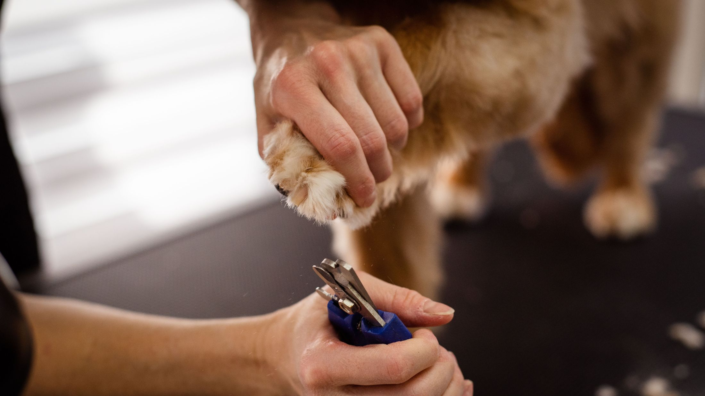
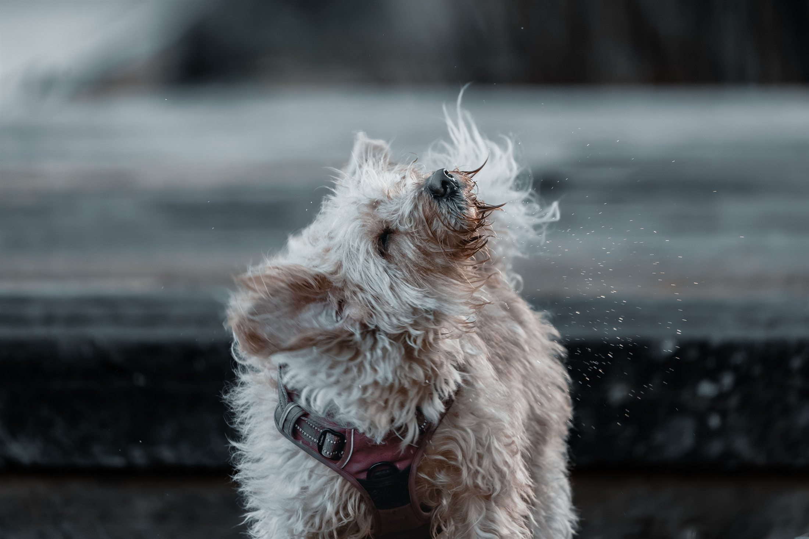
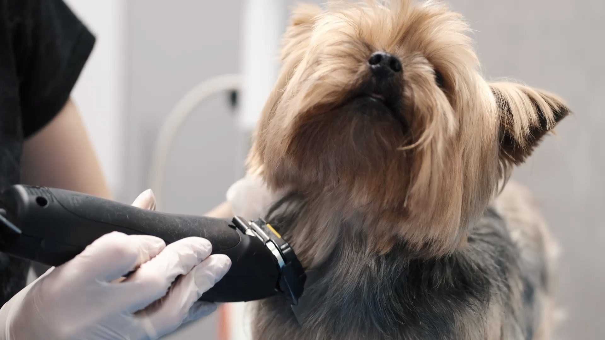
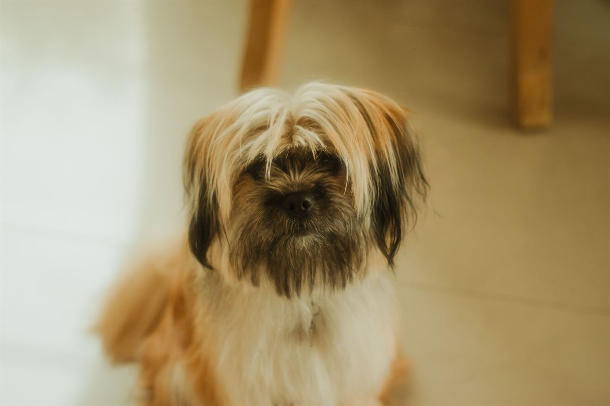
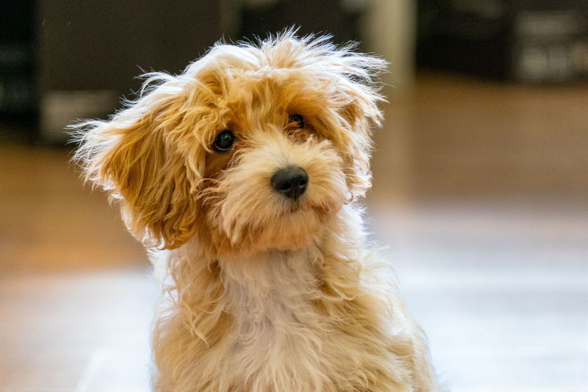
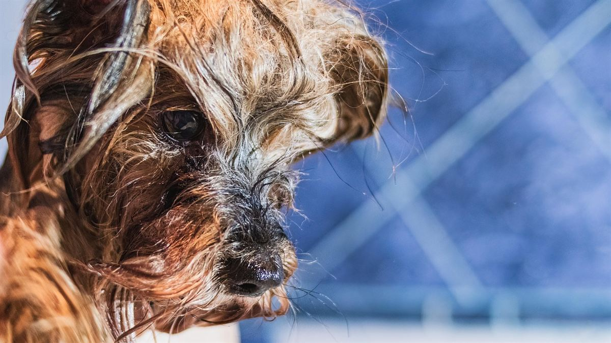
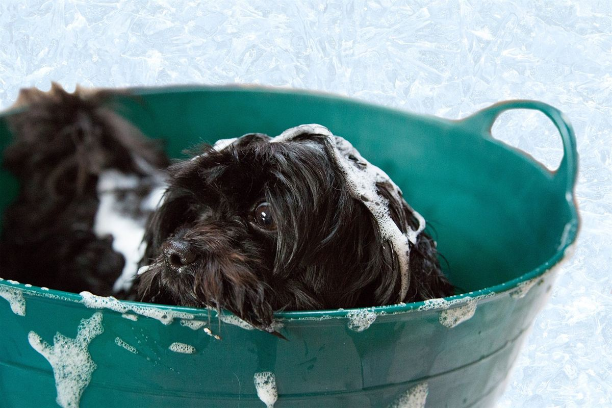
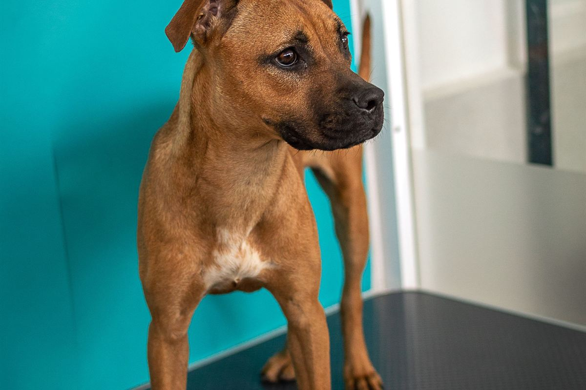
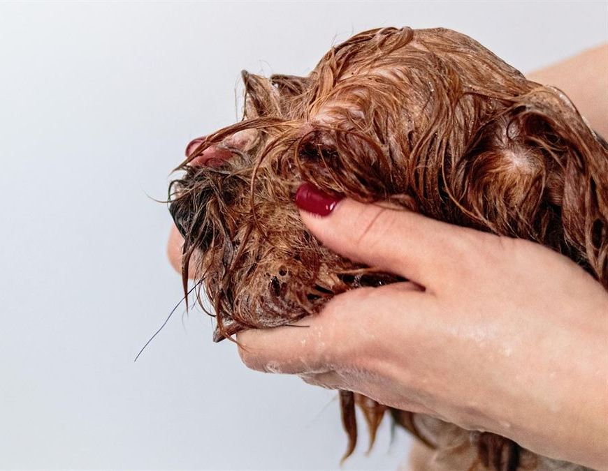

Baño sanitario
Lavado, secado, limpieza de oídos, corte de uñas y zona sanitaria.
- Deja al perro limpio y cómodo
- No incluye corte de pelo
- Es el que va entre peluquería y peluquería
Al pedir hora, diga el tamaño y cuándo fue el último baño.
Propuesta de sitio web — preparada para HairDog Peluquería Canina por CristalWeb
Su WhatsApp está publicado y la dirección de Avenida Las Quemas aparece en cinco fichas de directorios ajenos. Lo que no existe es una página suya: verificado el 08-09-2026, quien busca «peluquería canina Puerto Montt» encuentra los datos que copiaron otros y ninguna forma de ver qué corte admite su perro ni qué incluye cada baño antes de escribir. Ésta es la página que debería estar ahí.
Baño sanitario y estético · Perros chicos y medianos
No todos los perros admiten el mismo corte: depende del manto, no de la raza ni de la foto que uno vio. Abajo están los cuatro tipos y qué se puede hacer con cada uno.
Contado el 08-09-2026 buscando «peluquería canina Puerto Montt»: cinco directorios ajenos repiten la dirección de Avenida Las Quemas y el teléfono. Ninguno explica qué corte admite cada manto, y no hay ningún sitio de HairDog donde leerlo.
La pieza que ninguna peluquería canina publica
«¿Se le puede hacer corte de cachorro?» es la pregunta que más llega por mensaje. La respuesta no depende de la raza: depende de qué tipo de pelo tiene. Acá están los cuatro, con qué admite cada uno y cada cuánto toca.
Caniche, bichón, mezclas de pelo crespo.
Admite: casi cualquier corte, incluido el de cachorro. Es el manto más moldeable.
Cada cuánto: se enreda rápido — cepillado en casa y peluquería seguida.
Si se deja pasar, el nudo llega hasta la piel y ya no hay corte: hay que rapar.
Pastor, husky, quiltros de pelo grueso con lana abajo.
Admite: deslanado, no rapado. Tiene dos capas y la de abajo es la que sale.
Cada cuánto: fuerte en cambio de estación, cuando suelta.
Raparlo no lo refresca: le saca la capa que lo aísla y el pelo puede volver mal.
Schnauzer, fox terrier, westy.
Admite: corte a máquina o stripping. Con máquina el pelo se ablanda con el tiempo.
Cada cuánto: parejo todo el año, no tiene temporada fuerte.
Si le importa que mantenga el color y la textura, hay que decirlo antes: cambia el método.
Yorkshire, shih tzu, maltés.
Admite: largo o corto. Es el que más se ve en el resultado del baño.
Cada cuánto: baño seguido; el pelo largo se ensucia y se quiebra.
El nudo detrás de las orejas y en las axilas aparece primero. Ahí hay que mirar.
Esto es orientación de oficio, no un diagnóstico veterinario. Si el perro tiene piel irritada, heridas o parásitos, eso lo ve un veterinario antes del baño.

Y son la parte que más cuesta hacer en la casa sin que termine mal para todos.
Los servicios
La confusión más cara del rubro. Uno deja al perro limpio; el otro lo deja además cortado y presentable. Acá no van valores: el precio lo pone HairDog y depende del tamaño y del estado del pelo. Lo que sí va escrito es qué incluye cada uno y qué conviene decir al pedir la hora.
Lavado, secado, limpieza de oídos, corte de uñas y zona sanitaria.
Al pedir hora, diga el tamaño y cuándo fue el último baño.
Todo lo del sanitario más el corte según el manto, perfilado de cara y patas.
Al pedir hora, diga el tipo de manto y si tiene nudos.
Para doble manto: saca la capa interna suelta sin rapar la externa.
Al pedir hora, diga cuánto pelo suelta dentro de la casa.
El valor final depende del tamaño y del estado del pelo: un perro con nudos toma el doble de tiempo. Por eso conviene decirlo al pedir la hora, y por eso el formulario de abajo lo pregunta.
Cómo es la sesión

Lo que no se ve en la foto del después
Un perro que sale húmedo vuelve a oler a las dos horas, y en un manto doble o rizado la humedad que queda abajo es donde empieza el nudo. Por eso el secado es la parte que más demora de toda la sesión: no es soplar por encima, es levantar el pelo y secar hasta la piel.
Es también la razón por la que un baño hecho en la casa, con la mejor intención, muchas veces termina en un perro con nudos dos semanas después.

«Un perro bien cortado se nota a la semana siguiente, cuando el pelo crece parejo.»
El trabajo






Pedir hora
El tamaño, el manto y el estado del pelo cambian el tiempo y el valor. Con eso escrito, la peluquería responde con una hora concreta en vez de pedir tres mensajes más.
El WhatsApp de arriba es el que ustedes publican. La dirección la sacamos de las fichas de terceros que aparecen al buscar el negocio, no de ustedes: por eso va marcada. El horario no lo publica nadie, y es justo el dato que más se pregunta.
Sin JavaScript el botón abre WhatsApp igual, con un mensaje base, y el resto se escribe a mano; el número de más arriba también sigue siendo un enlace que abre el chat. Lo único que se pierde es que el texto vaya armado.

Para el dueño
Una propuesta de sitio web hecha por nuestra cuenta. HairDog no la encargó ni la ha revisado. Dimos por cierto sólo lo que ustedes publican: el rubro, los servicios de peluquería y baño para perros chicos, y el WhatsApp de su Facebook.
La dirección —la copiamos de directorios ajenos—, el horario y la hora de retiro. Valores no hay ninguno a propósito: los pone usted. Los cuatro mantos son conocimiento general del oficio, no casos suyos, y la página lo dice: nada de esto reemplaza a un veterinario.
Pares de antes y después de perros reales suyos, uno por tipo de manto. En este rubro esa foto es la venta. Las de acá son genéricas y se nota.